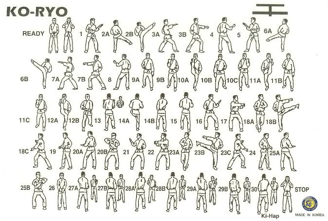
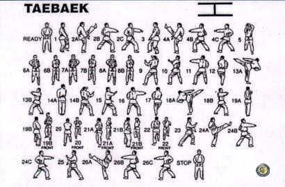

Cortesía
Ye Ui (예의)
Respeto hacia instructores, compañeros y uno mismo, dentro y fuera del entrenamiento.
Taekwondo (태권도) significa "el camino de los pies y las manos". Es un arte marcial coreano que combina técnicas de combate con una profunda filosofía de respeto, disciplina y superación personal.
Descubre sus fundamentosEl Taekwondo se sostiene sobre cinco principios filosóficos que todo practicante debe llevar dentro y fuera del dojang (lugar de entrenamiento).
Ye Ui (예의)
Respeto hacia instructores, compañeros y uno mismo, dentro y fuera del entrenamiento.
Yom Chi (염치)
Capacidad de distinguir lo correcto de lo incorrecto y actuar en consecuencia.
In Nae (인내)
Constancia para alcanzar metas a pesar de las dificultades y el paso del tiempo.
Guk Gi (극기)
Dominio del cuerpo y la mente, controlando impulsos, acciones y emociones.
Baekjul Boolgul (백절불굴)
Coraje y determinación inquebrantables ante la adversidad, nunca rendirse.
Jugar limpio, respetar al rival y aceptar tanto la victoria como la derrota con humildad.
Cariño genuino por el Taekwondo, por los compañeros de entrenamiento y por la familia que acompaña el proceso.
Entender el porqué de cada movimiento: estudiar la técnica con la mente, no solo repetirla con el cuerpo.
Los Poomsae son formas o patrones de movimientos predefinidos que combinan técnicas de ataque y defensa. Se aprenden en orden, paso a paso, para que cada estudiante sepa exactamente qué le corresponde practicar según su nivel.
Es la sede mundial del Taekwondo (World Taekwondo Headquarters), con base en Corea del Sur. Define el currículo oficial de Poomsae, otorga las certificaciones de Dan/Poom y establece el orden de aprendizaje que sigue esta página: Gibon → Taegeuk → Cinturón Negro.
Antes de iniciar los Taegeuk, los principiantes (cinturón blanco) aprenden los Gibon: formas sencillas que introducen posturas, bloqueos y golpes básicos sin la complejidad de un poomsae completo.

Postura básica (Ap Seogi), bloqueo medio y golpe directo. El primer contacto con un poomsae.
▶ Ver en YouTube
Incorpora el cambio de dirección y el bloqueo bajo (Arae Makki) a lo ya aprendido.
▶ Ver en YouTube
Suma una patada frontal simple (Ap Chagi) a las técnicas de mano, como puente hacia Taegeuk Il Jang.
▶ Ver en YouTubeOcho poomsae progresivos, cada uno asociado a un trigrama del I Ching, que se aprenden en orden antes de llegar al cinturón negro.

Trigrama "Keon" (el cielo). Introduce los bloqueos y golpes más básicos.
▶ Ver en YouTube
Trigrama "Tae" (el lago). Representa la calma por fuera y la firmeza por dentro.
▶ Ver en YouTube
Trigrama "Yi" (el fuego). Aporta velocidad y dinamismo a los movimientos.
▶ Ver en YouTube
Trigrama "Jin" (el trueno). Introduce técnicas de mayor potencia y equilibrio.
▶ Ver en YouTube
Trigrama "Seon" (el viento). Suma saltos y técnicas más exigentes físicamente.
▶ Ver en YouTube
Trigrama "Gam" (el agua). Fluidez constante, adaptándose como el agua a cada situación.
▶ Ver en YouTube
Trigrama "Gan" (la montaña). Exige estabilidad y solidez, como una montaña firme.
▶ Ver en YouTube
Trigrama "Gon" (la tierra). Último Taegeuk: integra todo lo aprendido con firmeza antes del cinturón negro.
▶ Ver en YouTubeAl obtener el cinturón negro, el Kukkiwon define un nuevo poomsae por cada Dan alcanzado.

Simboliza el espíritu del pueblo coreano "Koryo": firmeza y determinación de un guerrero.
▶ Ver en YouTube
Representa la montaña Keumgang: belleza, fuerza y virtud inquebrantable.
▶ Ver en YouTube


El número 10: representa el desarrollo y expansión constante, sin límite.
▶ Ver en YouTube
Simboliza a la humanidad sobre la tierra, consciente de sus raíces.
▶ Ver en YouTube
"El poder del cielo": origen de todo lo que existe en el universo.
▶ Ver en YouTube
El agua: suave pero capaz de atravesar cualquier obstáculo con el tiempo.
▶ Ver en YouTube
Unidad entre cuerpo y mente: el poomsae más alto, inspirado en el budismo zen.
▶ Ver en YouTubeIncluyen bloqueos (Makki) y golpes (Jirugi / Chigi), base de la defensa y el ataque cuerpo a cuerpo en el Taekwondo.

Bloqueo medio, protege la zona del torso frente a ataques frontales.

Bloqueo alto, destinado a detener ataques dirigidos a la cabeza y el rostro.

Bloqueo bajo, utilizado para defenderse de patadas y golpes a la zona inferior.

Puñetazo directo al torso, una de las técnicas de ataque más fundamentales.

Golpe lateral, ejecutado con giro de cadera para añadir potencia al impacto.

Golpe de "mano de cuchillo", ejecutado con el canto de la mano en trayectoria circular.
Las patadas son la técnica más distintiva del Taekwondo, destacando por su variedad, velocidad y alcance.

Patada frontal, ejecutada en línea recta elevando la rodilla y extendiendo la pierna.

Patada circular o "gancho", una de las más utilizadas en combate por su velocidad.

Patada lateral, ejecutada con el canto del pie y gran potencia de empuje.

Patada hacia atrás, de gran potencia, ejecutada con giro y mirada sobre el hombro.

Patada descendente o "de hacha", que cae verticalmente sobre el objetivo.

Patada semicircular, combina trayectoria curva con impacto frontal del empeine.
El combate (Kyorugi) pone a prueba la técnica, la estrategia y los reflejos del practicante en un intercambio dinámico con un oponente.

El juego de piernas permite entrar y salir de distancia, controlando el ritmo del combate.

Encadenar patadas y golpes genera aperturas difíciles de anticipar para el rival.

Leer al oponente y anticipar sus movimientos es tan importante como la técnica misma.